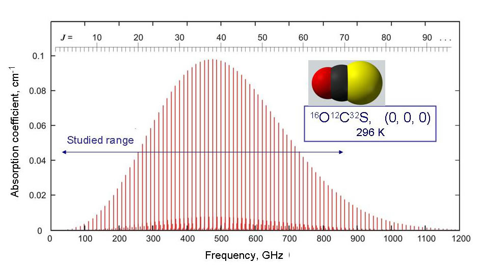
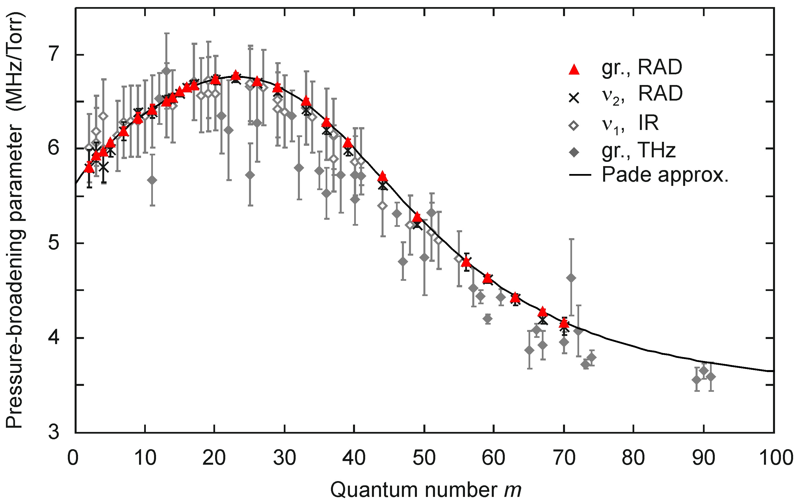
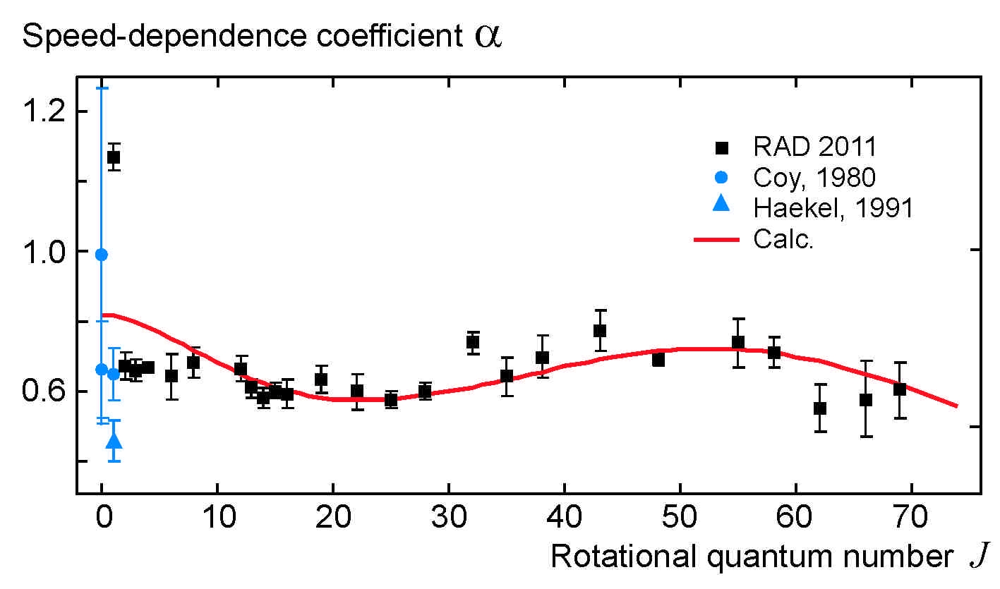
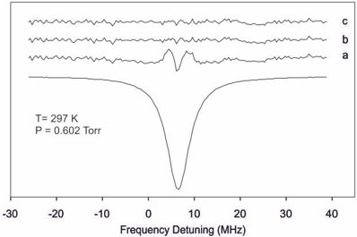

Instruments RAD
Spectrometer Terahertz spectrum of OCS RAD
Spectrometer Terahertz spectrum of OCS
Terahertz spectrum of OCS
|  |
|
|
Fig. 1 |
|
|  |
| Fig. 2 |
| |
 |
Fig. 3 |
The OCS spectrum was studied in a frequency range of 24 to 859 GHz,
which covers almost all the OCS rotational spectra observable at room
temperature (Fig.1) and corresponds to the interval of rotational quantum numbers
J from 1 to 69. High signal-to-noise ratio of spectral lines observed using
the RAD spectrometer allowed not only accurate measurement of pressure broadening
parameters in rotational spectrum of OSC [Fig. 2 and Ref. 1 (2009)]
but also resulted in determination
of speed dependence of collisional relaxation (Fig. 3). It is shown for the first time
for the whole rotational spectrum that speed dependent models not only improve accuracy of
modeling the observed line profiles
but also give physically grounded values of collisional relaxation parameters.
For more details see Ref. 5 (2012).

|

{kind=link}